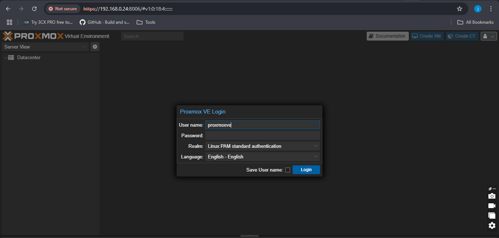

Projects — Homelab
Proxmox Virtual Lab
A cybersecurity playground simulating enterprise infrastructure — built to detect real threats, break things safely, and learn by doing.

What This Lab Is
This is a fully virtualized, enterprise-pattern homelab running on Proxmox VE. It's not a toy environment — it mirrors the kind of segmented, monitored infrastructure you'd find in a production data center, scaled down to bare metal running in my room.
Everything you see in the blog series below — the SIEM alerts, the CVE detections, the firewall configs — happened in this lab. It's the backbone of my cybersecurity practice.
Architecture Stack
Real Threat Detection — CVE-2025-29824
My Wazuh instance flagged a live Windows CLFS privilege escalation vulnerability before I'd even read about it. I researched the CVE, implemented the community patch, validated mitigation via SIEM logs, and documented the entire kill chain.
That's the lab doing exactly what it's supposed to do.
→ Read the CVE-2025-29824 case studySkills Demonstrated
week-01 inside-proxmox-architecture
week-02 wazuh-siem-setup
week-03 pfsense-monitoring
week-04 turnkey-file-server
week-05 proxmox-containers
week-06 cve-2025-29824-detection
week-07 kali-secure-lab-env
$ cat week-01/README.md
// Loading...
// 7 documented weeks · real infrastructure · real threats